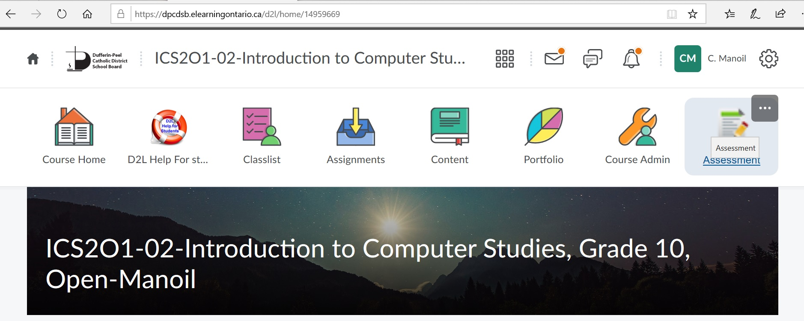
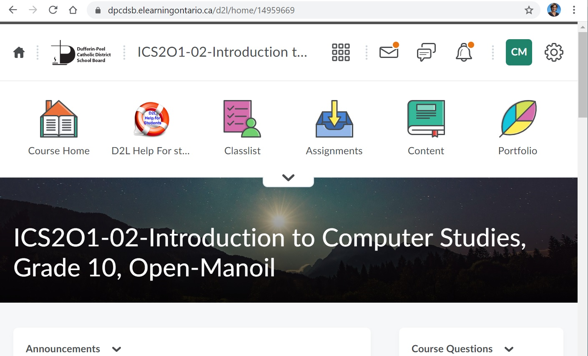
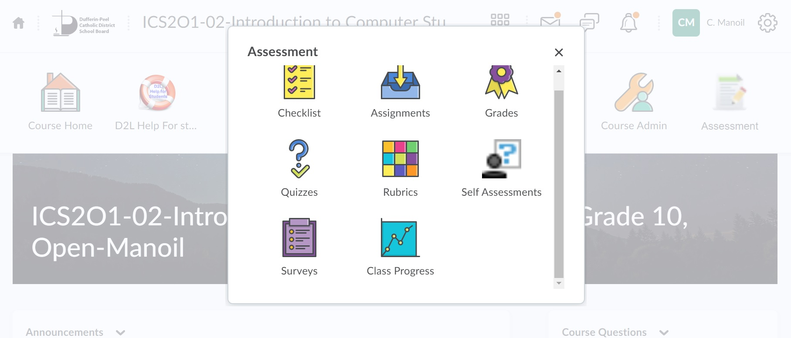
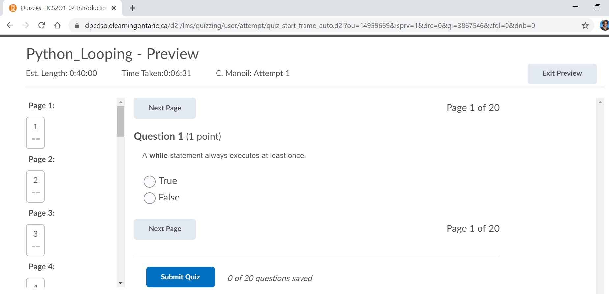
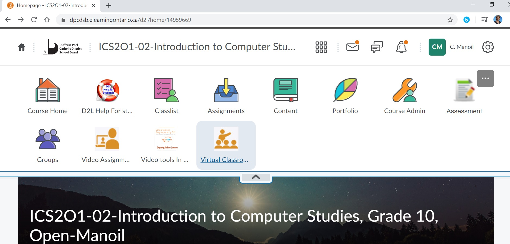
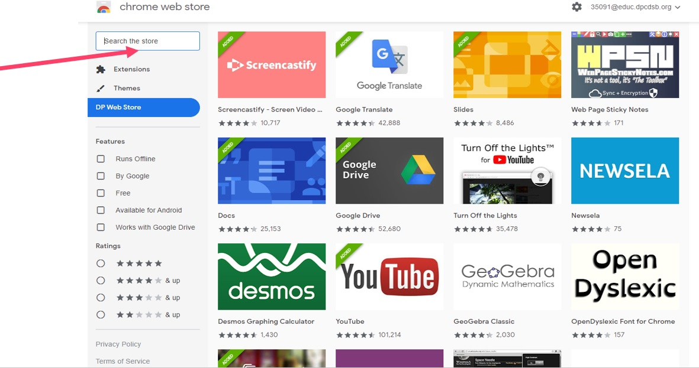
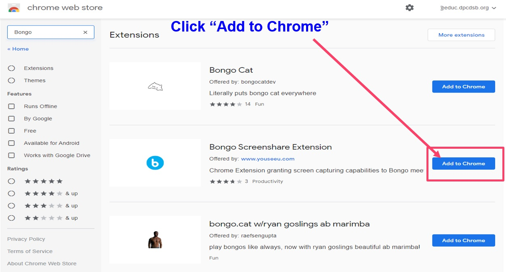
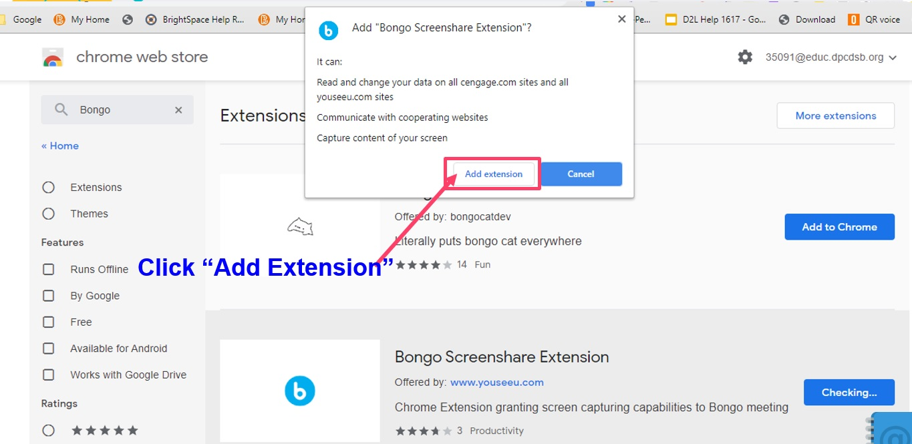
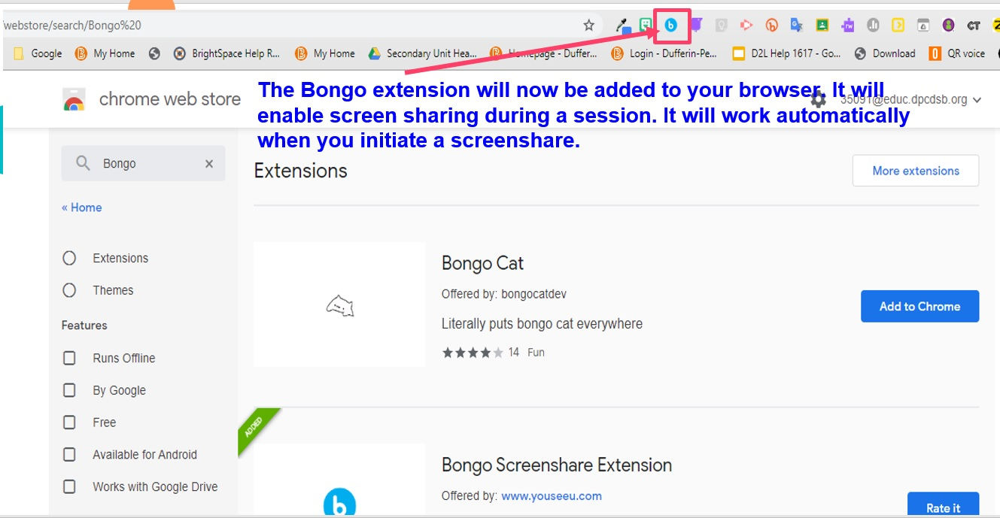
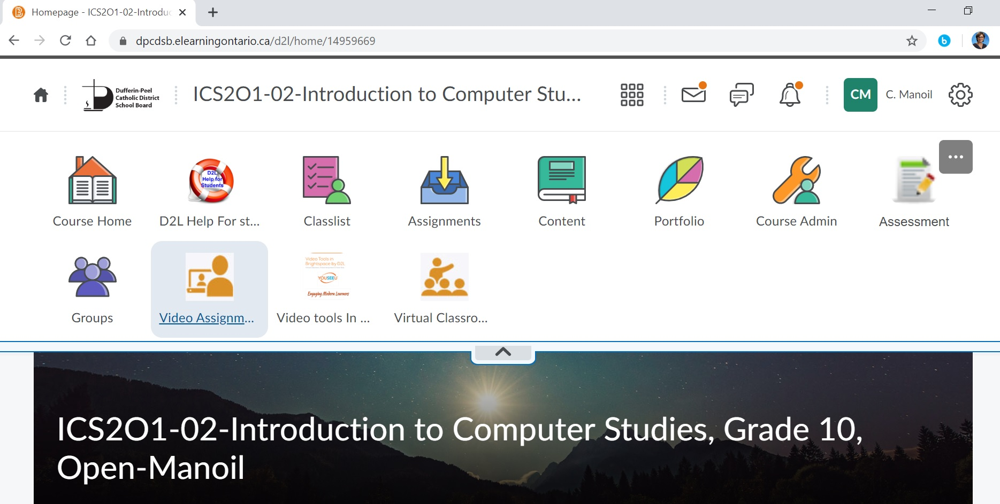

D2L
A learner's guide on how to use D2l
A learner's guide on how to use D2l
D2L is an innovative learning management system for creating, hosting, and editing online learning resources. For our school board D2L is available here https://dpcdsb.elearningontario.ca/d2l/home. You can easily find it if you google D2L dpcdsb. You must be familiar with the D2L environment, since many teachers are using this tool to share lessons and assignments, but if you are not familiar excellent tutorials are available here - https://documentation.brightspace.com/EN/learners/learners.htm. Watch the video below to see how to access your courses.

I will introduce a few usefull D2L features.
You can use the Classlist to view who is enrolled in your course, send email messages or instant messages, view shared locker files, and read their blogs if they have one.

The Discussions tool is a collaboration area to post, read and reply to threads on different topics, share thoughts about course materials, ask questions, share files, or work with your peers on assignments and homework. Important: When copying and pasting formatted content from other sources, the HTML Editor in the Discussions tool contains some limitations. For example, if you copy content from a document with APA formatting and paste it into a discussion thread, the formatting is not preserved. As a best practice for submitting assignments, D2L recommends using the Assignments tool. If you choose to use the Discussions tool, D2L recommends submitting documents as attachments in the tool, which preserves document Excellent tutorials are available
I will sometimes be using the D2L Assessment Tool for evaluating your understanding on the course concepts. To access the D2L Assessment Tool, you’ll need to click on the Assessment icon on the Toolbar, see the image below.

In certain browsers the Assessment Tool is hidden, and it needs to be exposed by clicking on the arrow pointing down, to expand the toolbar.

Once you open the Assessment Tool, you will be able to access the Quizzes, Assignments, Surveys, Rubrics, or Stats regarding your progress, see below the Assessment Tool selection panel. I will be using the Quizzes feature of the Assessment Tool, mostly to evaluate the Knowledge section of your tests. Step by step instructions on how to take a quiz are available here - https://documentation.brightspace.com/EN/le/quizzes/learner/take_quiz.htm

Taking a quiz on the D2L Assessment tool is very intuitive. The Next Page button allows you to advance to a new question, and when you are done answering the questions, you’ll press the Submit Quiz button. On the left side panel, you can see your progress.


The Virtual Classroom provides a seamless way to connect face-to-face with multiple parties for instruction, assessment, and feedback. You can schedule live discussions, office hours, video-based training, and more. Video sessions can be automatically recorded and seamlessly embedded directly into a course alongside other learning materials.
To access the Virtual Classroom Tool, you’ll need to click on the Virtual Classroom icon on the Toolbar, see the image below. In certain browsers the Virtual Classroom Tool is hidden, and it needs to be exposed by clicking on the inverted chevron, the arrow that expands/collapse the toolbar.

Here are some videos that demonstrate how to access the Virtual Classroom Tool, and showcase the actions and the features that are avilable.
In order to be able to share your screen in D2L, you’ll need to install the Bongo Chrome extension. This is not required if you are not planning to be a presenter. But, if makes everything easier if you want to do some group work with your classmates, and you want to be able to see each other screen. If you would like to be able to cast your screen live for webinars, you must install the Bongo extension from the DP Webstore. To do this follow the steps below:




 Structured video workflows enable organizations to facilitate repeated skill practice
and knowledge application within a real-world context. By using a variety of feedback opportunities
such as Auto Analysis (a report on metrics such as speech clarity, use of filler words,
speaking rate and key terms), time-stamped text & video comments, rubrics, and grading, learners get
personalized, pointed feedback from evaluators and peers.
Structured video workflows enable organizations to facilitate repeated skill practice
and knowledge application within a real-world context. By using a variety of feedback opportunities
such as Auto Analysis (a report on metrics such as speech clarity, use of filler words,
speaking rate and key terms), time-stamped text & video comments, rubrics, and grading, learners get
personalized, pointed feedback from evaluators and peers.
To access the Video Assignments Tool, you’ll need to click on the Video Assignments icon on the Toolbar, see the image below. In certain browsers the Video Assignments Tool is hidden, and it needs to be exposed by clicking on the inverted chevron, the arrow that expands/collapse the toolbar.

The Virtual Classroom and Video assignments are web conferencing and video assessment solutions that enable experiential learning and soft skill development at scale. When learners demonstrate skills and apply their knowledge on video, evaluators get an authentic representation of what they can do. With these tools integration in D2L, students are able to demonstrate their learning and knowledge in a highly personalized way. Students who participate in oral presentations, and video-based activities are further developing critical thinking, collaboration and other attributes which are connected to the development of the 21st Century Global Competencies. Students are able to provide each other peer feedback increasing autonomy and responsibility while working toward a deeper understanding of the content. By making classes more interactive, student’s level of engagement is increased which leads to better learning gains.